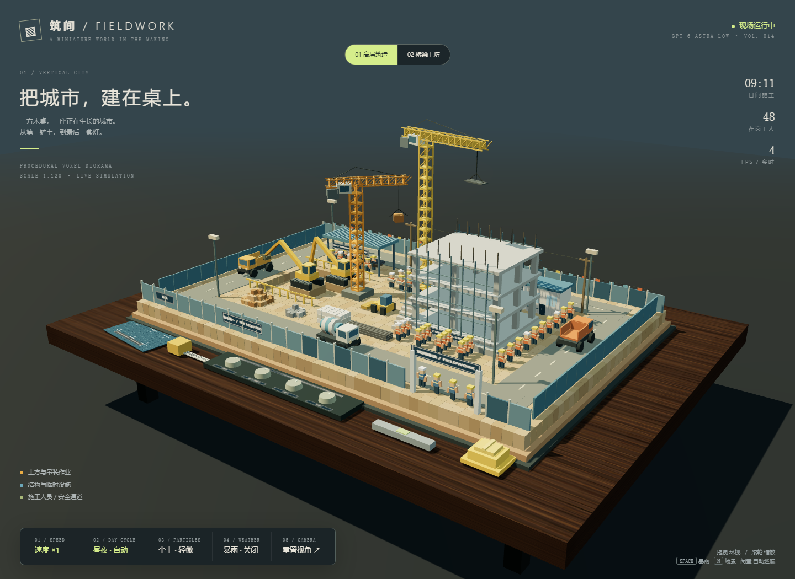

筑间 / FIELDWORK · GPT 6 Astra Low
原始提示词
新建项目文件夹，相关文档，修改项目相关文件，模型 gpt6 astra low，任务：用 WebGL (Three.js r160 CDN) 创作一个体素微缩建筑工地沙盘场景，输出为可直接在 Chrome 打开的单个 HTML 文件，不引用任何外部资源，全部几何体、材质、贴图使用代码生成，目标稳定 60FPS，杜绝物体穿模。 场景载体：整套工地微缩模型摆放在室内深色实木工作桌面上，桌面边角散落蓝图图纸、钢卷尺、安全帽摆件、金属水平仪，第三人平视人眼高度视角观察整个沙盘。 工地主体布局：完整施工工地，划分基坑开挖区、钢筋加工棚、物料堆放区、在建高层楼房基座、临时板房办公区、渣土堆放区、临时施工道路。 动态机械设备：多台体素挖掘机持续作业，铲斗往复挖掘基坑土方；轮式渣土卡车循环行驶，开到挖掘机旁接土，满载后驶往渣土堆卸料；多台塔式塔吊回转吊起重钢筋、混凝土料斗，来回吊运物料；混凝土搅拌罐车缓慢行驶，小型装载机平整地面。 人物与细节：大量体素工人各司其职，有的绑扎钢筋、有的搬运建材、有的指挥塔吊、有的操作小型工具、安保人员在出入口巡逻；工地设置围挡、警示彩旗、施工指示灯、临时照明灯、脚手架、堆叠钢筋、水泥堆、砂石料堆、施工围挡大门、临时水电杆、安全警示标识。 环境与昼夜系统：完整日夜循环，黎明、正午、黄昏、夜晚四套天色；夜晚工地探照灯、塔吊灯、板房窗户向外发出暖辉光；尘土粒子效果缓缓飘散。 交互系统：鼠标拖拽环视相机，闲置时自动缓慢环绕场景；鼠标滚轮缩放视角；鼠标点击桌面前方实体模拟控制旋钮开关：调节工地设备运行速度、开关昼夜循环、切换施工尘土强度；按下空格键触发模拟暴雨天气，雨滴粒子、地面湿滑反光，工地灯光亮度提升。 技术要求：大量物体使用 InstancedMesh 实例化批渲染提升性能；自定义 shader 实现尘土粒子、灯光光晕；所有运动物体做好碰撞约束，不发生穿插穿模；全部工地元素限定在沙盘桌面范围之内，不会超出场景边界。色彩丰富，体素方块颗粒质感明显，细节饱满。添加新场景进去
项目说明
- 模型：GPT 6 Astra Low
- 项目类型：单 HTML / WebGL 体素微缩场景
- 入口文件：index.html
- 运行方式：用 Chrome 直接打开
index.html，或通过 GitHub Pages 访问。无需安装依赖、构建或启动服务。 - 资源约定：仅使用提示词明确指定的 Three.js r160 CDN；需要联网加载该引擎。没有外部图片、模型、字体或贴图，木纹、蓝图、标识、粒子均由代码生成。“不引用任何外部资源”按不引用其他外部素材理解，本页面不是完全离线文件。
场景与交互
- 01 高层筑造：多层混凝土框架、脚手架与预留钢筋。
- 02 桥梁工坊：双桥墩、未合龙桥面与预制梁；保留完整配套工地。
- 两套场景均包含真实开口的基坑、钢筋加工棚、物料区、办公板房、渣土区、闭环施工道路、围挡大门、照明与安全标识。
- 桌面有程序化木纹、蓝图、卷尺、水平仪和体素安全帽；默认第三人桌边观察视角。
| 操作 | 功能 |
|---|---|
| 鼠标 / 单指拖拽 | 环视沙盘 |
| 滚轮 | 缩放；限制相机距离与俯仰角 |
| 闲置 6.5 秒 | 缓慢自动环绕 |
| 速度旋钮 / 屏幕按钮 | ×0、×1、×2、×4；×0 暂停机械与工人 |
| 昼夜旋钮 / 屏幕按钮 | 暂停或恢复 180 秒完整日夜循环 |
| 尘土旋钮 / 屏幕按钮 | 关闭、轻微、浓厚 |
暴雨旋钮 / 屏幕按钮 / Space |
雨滴、湿润路面反射、增强暖光；雨中抑制尘土 |
顶部场景按钮 / N |
高层与桥梁场景切换 |
| 重置视角 | 返回默认镜头 |
实现与约束
- 地块、围挡、钢筋、堆料、建筑和机械重复部件按材质使用
InstancedMesh；48 名工人的身体和活动肢体使用动态实例矩阵。 - 车辆共用单向圆角道路与统一调度时钟，保持固定进度间距，装卸停靠时车队同步等待。两台渣土车交替在基坑旁接土，再驶至堆料区倾倒。
- 挖掘机使用两段机械臂逆运动学；铲斗目标限制在各自作业带，履带下有支撑土台。塔吊采用分离的回转范围与高度，吊物保持在建筑最高点之上。
- 两套结构预先构建，切换可见性，不反复分配 GPU 资源。
- 尘土与灯光光晕使用自定义
ShaderMaterial；暴雨使用线段粒子；湿路面利用代码生成的环境反射与粗糙度过渡。 - 使用单个投影阴影光源、2048 阴影贴图、最高 1.5 倍像素比；页面隐藏时暂停模拟推进，限制单帧步长，避免后台恢复后运动跳跃。
- 碰撞处理以预留作业区、固定路线、机械臂目标约束为主，并非通用刚体物理求解器。60 FPS 是性能目标，实际帧率取决于 GPU、窗口分辨率和浏览器；右上角显示实时测量值。
验证
2026-09-15，使用 Playwright 驱动 Chrome for Testing 153 验证：
- 根目录
node --check index.js、入口内联脚本node --check与git diff --check均通过。 - 本地静态服务器首页：总数 14、加载更多、搜索 Astra Low、分类筛选、名称 / 最新排序、网格 / 列表、无结果重置均通过；生成的入口与提示词链接返回 HTTP 200。
- Chrome
file://直接打开通过；两套场景、速度与暂停、昼夜暂停、尘土三档、暴雨、快捷键、实体旋钮射线点击、拖拽和滚轮均通过。 - 1440×960 桌面和 390×844 移动端检查通过，移动端无水平溢出，五个控制按钮均在可视区域内。
- 加速采样 220 秒模拟，覆盖黎明、日间、黄昏、夜间及装卸循环：车辆包围盒未越出 24×16 沙盘，车辆间最小中心距离约 11.31；两个铲斗未相交，铲斗包围盒最低点约 0.792，高于坑底 0.58。此检查不代表对全部部件和所有相机状态的穷尽物理证明。
- 日间、暴雨、夜间暴雨着色器均编译成功，未发现 JavaScript 或着色器控制台错误。
- 本机无头 Chrome 在 1440×960 下，日间样本约 162 FPS，暴雨样本约 158 FPS，约 389–392 次绘制调用、3.9 万三角形。性能样本来自真实帧循环；220 秒加速采样仅用于状态与几何检查，不计入 FPS 结果。其他硬件不保证相同帧率。
预览截图

<!-- archive:start -->
当前归档信息（自动生成）
- 实验 ID：
voxel-construction-site--gpt-6-astra-low-r01 - 模型：GPT-6 Astra；推理档位：low
- 类型：single-html；预览：static；网络：required
- 完整原始输入快照 · 主题与其他版本
- 输入记录：保留文档中的原始输入；其他会话上下文未记录。
- 工具：未记录。来自历史实验说明；未记录的设置不作推测。
- 运行方式：浏览器直接打开本目录入口；CDN/外部素材需要联网。
- 费用记录：OpenAI · ChatGPT Plus 订阅；单案例货币金额未记录。据用户说明，OpenAI 模型通过 ChatGPT Plus 订阅测试；全部案例完成后，五小时额度未耗尽。未提供单案例费用金额。
- 主页面
部署适配记录
无新增实现改动。 <!-- archive:end -->